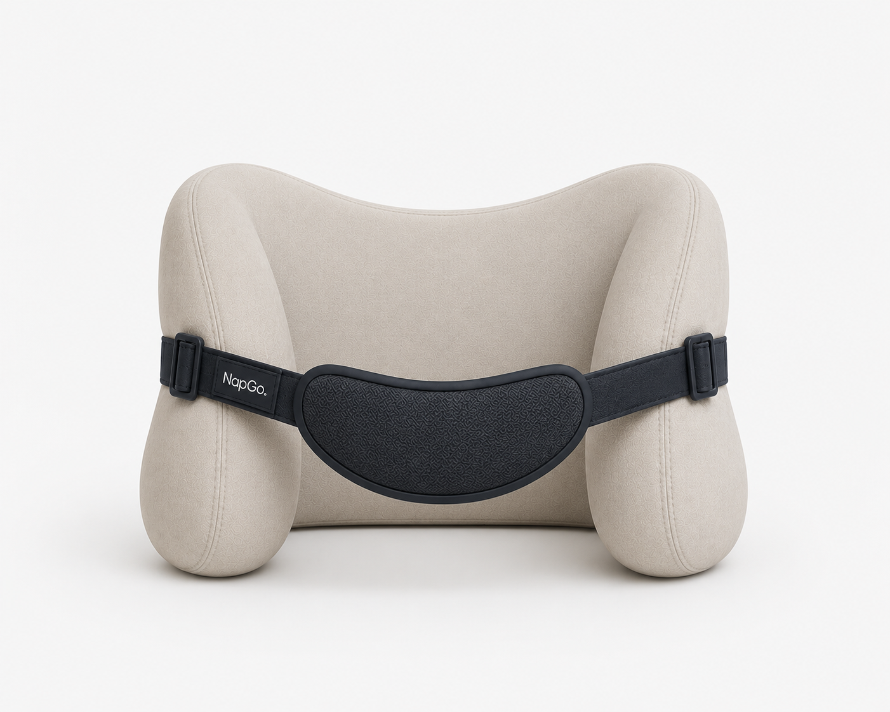
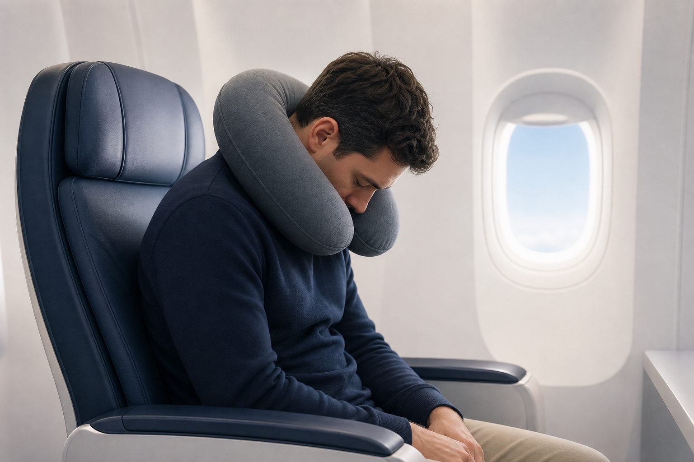

Ergonomic travel sleep
Best Sleep
Anytime, Anywhere.
Tired of neck pain after every journey? Stop trying pillow after pillow. Meet NapGo.

High Side Cushions
Adjustable chin support

The travel sleep problem
Why Traditional Travel Pillows Fall Short
Neck pain after sleeping
Thick back pushes the head out of alignment
Doesn't properly support the chin
Traditional travel pillows focus on cushioning your neck instead of supporting the way you naturally sleep.
The NapGo solution
Designed Around Your Spine
Every surface is shaped to stabilize the head without forcing the neck forward.
How it works
Settle In Within Seconds
Place NapGo comfortably on your shoulders.
Adjust the chin strap for the perfect fit.
Relax while NapGo supports your head and neck throughout your journey.
Feature highlights
Comfort Engineered for Motion
Flat Back Support
A flat, contoured back rests naturally against the seat, keeping your head aligned without pushing it forward.
High Side Cushions
Tall, ergonomic side cushions cradle your head and prevent it from tilting sideways during sleep.
Padded Chin Support
A wide, soft cloth chin support gently prevents your head from falling forward while remaining comfortable for extended use.
Removable & Adjustable Strap
The cloth support strap is fully adjustable for a personalized fit and can be removed whenever chin support isn't needed.
Premium Memory Foam
High-density memory foam provides firm yet comfortable support, maintaining its shape throughout long journeys.
Removable & Washable Cover
The outer fabric cover can be easily removed and washed, keeping your NapGo clean, fresh, and ready for every trip
Comparison
A Better Way to Sleep While Traveling
Traditional PillowNapGo
Thick back cushionFlat back support
Head falls forwardChin supported
Basic side supportFull head stabilization
Neck strainNatural spinal alignment
User journey
From Boarding to Arrival
Board your journey
Wear NapGo
Fall asleep comfortably
Arrive refreshed
FAQ
For now, NapGo features a standard size that fits most adults and comes equipped with an adjustable and removable chin strap.
Yes. The strap can be tuned for gentle forward support without feeling tight.
NapGo is planned with a removable, washable cover for easy care between journeys.
Yes. It is built for upright seats across flights, trains, buses, and road trips.
Yes. The cloth strap can be tied to your bag handle, making it easy to carry while traveling.
NapGo
Travel Better. Sleep Better.
Experience a smarter way to sleep upright with NapGo.
Pre-order NapGo